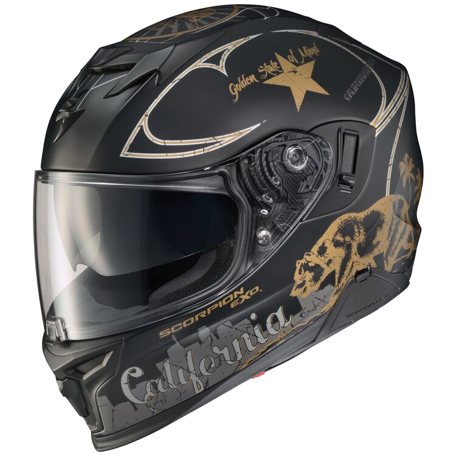

Scorpion EXO-T520 Golden State sisak
Az EXO-T520 könnyű, alacsony profillal rendelkezik, amely tökéletes városi ingázáshoz és hosszú távú túrákhoz. Az agresszív, aerodinamikus forma és az egyedülálló AirFit felfújórendszer együttesen csökkenti a légellenállást és az emelést, míg az EXO-T520 kettős homologizált fejlett polikarbonát héja és többsűrűségű EPS biztosítja a szükséges energiaelmozdulást és védelmet. Az EXO-T520 párásodásgátló bevonatú Everclear külső arcvédője törés- és karcállóságot biztosít, míg belül a beépített SpeedView napellenző segít eltakarni a napot, amikor szüksége van rá. A 6 állítható szívónyílás és az integrált hátsó kipufogónyílás tökéletesen illeszkedik a belső csatornákhoz, így hűvös marad, amikor a hőmérséklet emelkedik, és meleg, amikor a hőmérséklet csökken. Az EXO-T520-at kifejezetten az új EXO-COM Bluetooth kommunikátorkészlettel való integrációra tervezték, miközben a nagy hangszórózsebek sok más, a piacon kapható kommunikációs rendszerrel is kompatibilissé teszik.